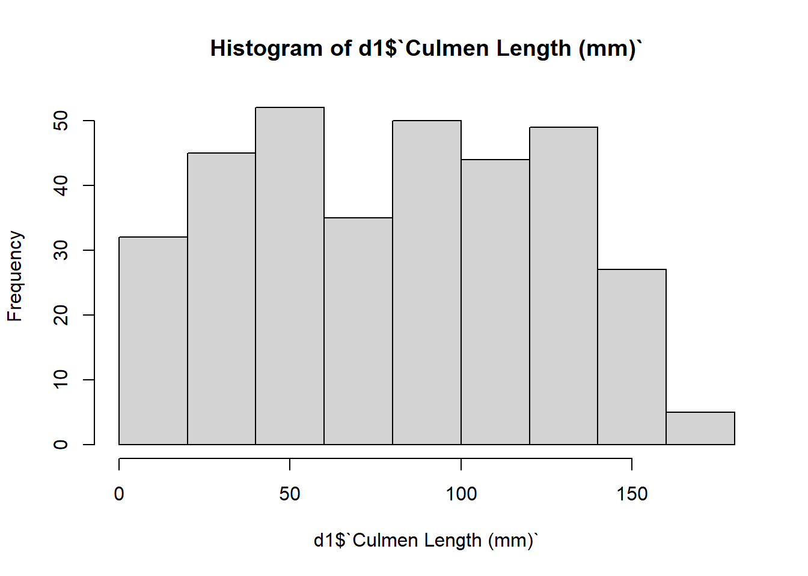
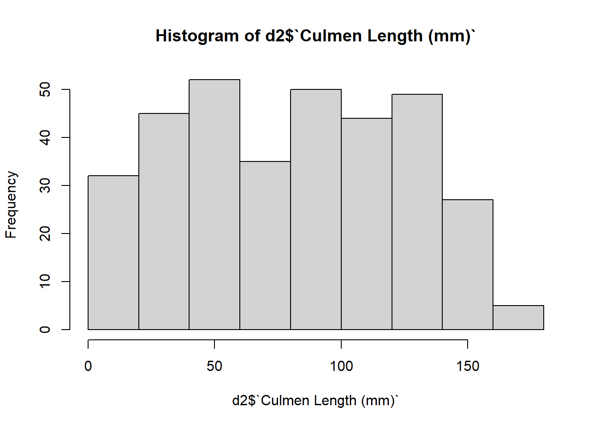
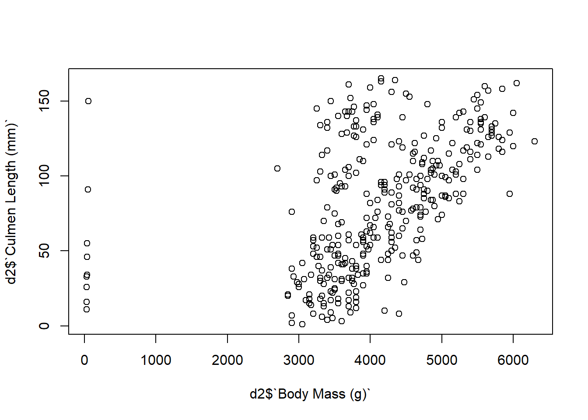
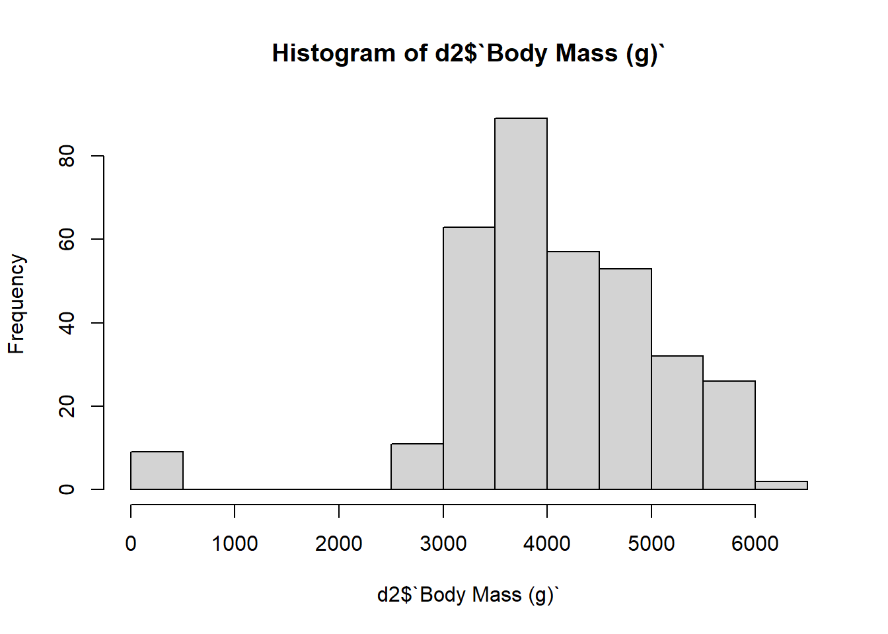
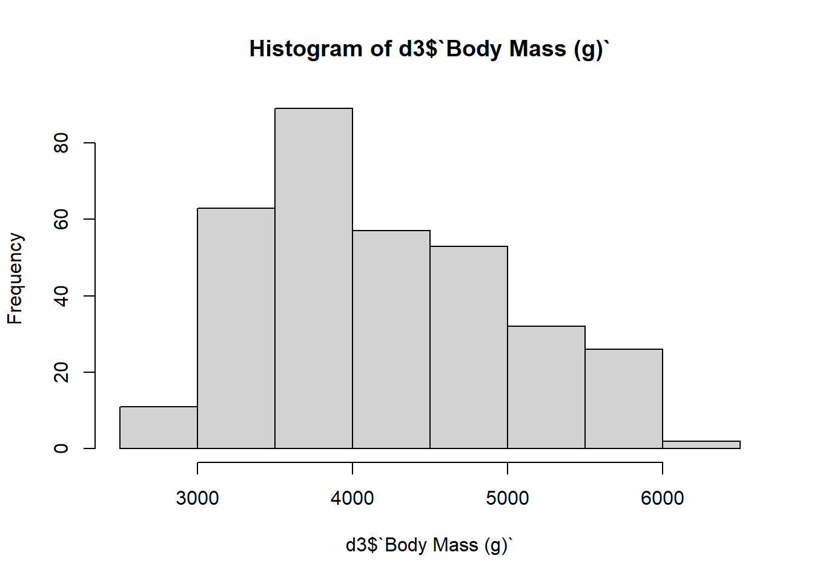
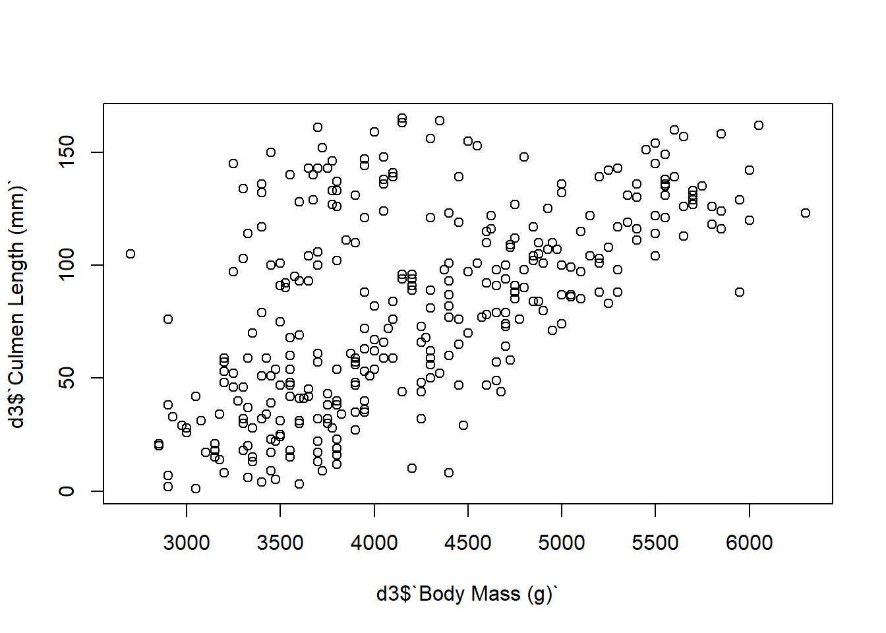

#load needed packages.
require(dplyr) #for data processing/cleaning
require(tidyr) #for data processing/cleaning
require(skimr) #for nice visualization of data cleaning script with code pulled in from R script
Processing script (data cleaning) with code pulled in from script
This is essentially the same as the other Quarto file, but now the code is not inside this file. Instead, it is pulled in from the R script using the code chunk labels.
Setup
This needs to run to load the R script so we can include the code chunks below.
Note that you can pull in more than one R script if you want.
Load needed packages. Instead of having R commands here, we can have R do it by pulls in the code from the R script according to the labels. Here the code chuck below is replaced with the packages code chunk from processingcode.R.
Data loading
#path to data
data_location <- "../../Data/Raw_data/penguins_raw_dirty.csv"
data_path <- "../../Data/Raw_data/"
#load data.
rawdata <- read.csv(data_location, check.names=FALSE)
# look in the data dictionary for a variable explanation
dictionary <- read.csv(paste(data_path, "datadictionary.csv", sep=""))
print(dictionary) variable
1 studyName
2 Sample Number
3 Species
4 Region
5 Island
6 Stage
7 Individual ID
8 Clutch Completion
9 Date Egg
10 Culmen Length
11 Culmen Depth
12 Flipper Length
13 Body Mass
14 Sex
15 Delta 15 N
16 Delta 13 C
17 Comments
description
1 Sampling expedition from which data were collected, generated, etc.
2 an integer denoting the continuous numbering sequence for each sample
3 a character string denoting the penguin species
4 a character string denoting the region of Palmer LTER sampling grid
5 a character string denoting the island near Palmer Station where samples were collected
6 a character string denoting reproductive stage at sampling
7 a character string denoting the unique ID for each individual in dataset
8 a character string denoting if the study nest observed with a full clutch, i.e., 2 eggs
9 a date denoting the date study nest observed with 1 egg (sampled)
10 a number denoting the length of the dorsal ridge of a bird's bill (millimeters)
11 a number denoting the depth of the dorsal ridge of a bird's bill (millimeters)
12 an integer denoting the length penguin flipper (millimeters)
13 an integer denoting the penguin body mass (grams)
14 a character string denoting the sex of an animal
15 a number denoting the measure of the ratio of stable isotopes 15N:14N
16 a number denoting the measure of the ratio of stable isotopes 13C:12C
17 a character string with text providing additional relevant information for dataExplore Data
There are several ways of looking at the data
#Looking at the raw data
dplyr::glimpse(rawdata)Rows: 344
Columns: 17
$ studyName <chr> "PAL0708", "PAL0708", "PAL0708", "PAL0708", "PAL…
$ `Sample Number` <int> 1, 2, 3, 4, 5, 6, 7, 8, 9, 10, 11, 12, 13, 14, 1…
$ Species <chr> "Adelie Penguin (Pygoscelis adeliae)", "Adelie P…
$ Region <chr> "Anvers", "Anvers", "Anvers", "Anvers", "Anvers"…
$ Island <chr> "Torgersen", "Torgersen", "Torgersen", "Torgerse…
$ Stage <chr> "Adult, 1 Egg Stage", "Adult, 1 Egg Stage", "Adu…
$ `Individual ID` <chr> "N1A1", "N1A2", "N2A1", "N2A2", "N3A1", "N3A2", …
$ `Clutch Completion` <chr> "Yes", "Yes", "Yes", "Yes", "Yes", "Yes", "No", …
$ `Date Egg` <chr> "2007-11-11", "2007-11-11", "2007-11-16", "2007-…
$ `Culmen Length (mm)` <chr> "43", "46", "52", "missing", "23", "45", "41", "…
$ `Culmen Depth (mm)` <dbl> 18.7, 17.4, 18.0, NA, 19.3, 20.6, 17.8, 19.6, 18…
$ `Flipper Length (mm)` <int> 181, 186, 195, NA, 193, 190, 181, 195, 193, 190,…
$ `Body Mass (g)` <dbl> 3750, 38, 3250, NA, 3450, 3650, 3625, 4675, 3475…
$ Sex <chr> "MALE", "FEMALE", "FEMALE", NA, "FEMALE", "MALE"…
$ `Delta 15 N (o/oo)` <dbl> NA, 8.94956, 8.36821, NA, 8.76651, 8.66496, 9.18…
$ `Delta 13 C (o/oo)` <dbl> NA, -24.69454, -25.33302, NA, -25.32426, -25.298…
$ Comments <chr> "Not enough blood for isotopes.", NA, NA, "Adult…#this is a nice way to look at data
skimr::skim(rawdata)| Name | rawdata |
| Number of rows | 344 |
| Number of columns | 17 |
| _______________________ | |
| Column type frequency: | |
| character | 11 |
| numeric | 6 |
| ________________________ | |
| Group variables | None |
Variable type: character
| skim_variable | n_missing | complete_rate | min | max | empty | n_unique | whitespace |
|---|---|---|---|---|---|---|---|
| studyName | 0 | 1.00 | 7 | 7 | 0 | 3 | 0 |
| Species | 0 | 1.00 | 33 | 41 | 0 | 15 | 0 |
| Region | 0 | 1.00 | 6 | 6 | 0 | 1 | 0 |
| Island | 0 | 1.00 | 5 | 9 | 0 | 3 | 0 |
| Stage | 0 | 1.00 | 18 | 18 | 0 | 1 | 0 |
| Individual ID | 0 | 1.00 | 4 | 6 | 0 | 190 | 0 |
| Clutch Completion | 0 | 1.00 | 2 | 3 | 0 | 2 | 0 |
| Date Egg | 0 | 1.00 | 10 | 10 | 0 | 50 | 0 |
| Culmen Length (mm) | 4 | 0.99 | 1 | 7 | 0 | 166 | 0 |
| Sex | 11 | 0.97 | 4 | 6 | 0 | 2 | 0 |
| Comments | 290 | 0.16 | 18 | 68 | 0 | 10 | 0 |
Variable type: numeric
| skim_variable | n_missing | complete_rate | mean | sd | p0 | p25 | p50 | p75 | p100 | hist |
|---|---|---|---|---|---|---|---|---|---|---|
| Sample Number | 0 | 1.00 | 63.15 | 40.43 | 1.00 | 29.00 | 58.00 | 95.25 | 152.00 | ▇▇▆▅▃ |
| Culmen Depth (mm) | 2 | 0.99 | 17.15 | 1.97 | 13.10 | 15.60 | 17.30 | 18.70 | 21.50 | ▅▅▇▇▂ |
| Flipper Length (mm) | 2 | 0.99 | 200.92 | 14.06 | 172.00 | 190.00 | 197.00 | 213.00 | 231.00 | ▂▇▃▅▂ |
| Body Mass (g) | 2 | 0.99 | 4102.54 | 1034.38 | 30.50 | 3550.00 | 4000.00 | 4750.00 | 6300.00 | ▁▁▆▇▃ |
| Delta 15 N (o/oo) | 14 | 0.96 | 8.73 | 0.55 | 7.63 | 8.30 | 8.65 | 9.17 | 10.03 | ▃▇▆▅▂ |
| Delta 13 C (o/oo) | 13 | 0.96 | -25.69 | 0.79 | -27.02 | -26.32 | -25.83 | -25.06 | -23.79 | ▆▇▅▅▂ |
Cleaning
Inspecting the data, we find some problems that need addressing.
Species names
First, we know that this is a dataset for three species of penguin, but we notice that there are 9 unique species.
# Inspecting the data, we find that there are 9 unique names when we know
# there were only 3 species of penguins used in the experiment.
#Using 'unique' we can see how many unique hits come up under the species for
# the raw data
unique(rawdata$Species) [1] "Adelie Penguin (Pygoscelis adeliae)"
[2] "Adelie PenguinR(Pygoscelis adeliae)"
[3] "Adnlie Penguin (Pygoscelis adeliae)"
[4] "Adelie PenguiO (Pygoscelis adeliae)"
[5] "Adelie Penguii (Pygoscelis adeliae)"
[6] "Gentoo penguin (Pygoscelis papua)"
[7] "Gentoowpenguin (Pygoscelis papua)"
[8] "Gentoo penJuin (Pygoscelis papua)"
[9] "Gentoo petguin (Pygoscelis papua)"
[10] "Gentoo pemguin (Pygoscelis papua)"
[11] "GeHtoo penguin (Pygoscelis papua)"
[12] "Gentoo penuuin (Pygoscelis papua)"
[13] "Chinstrap penguin (Pygoscelis antarctica)"
[14] "Chinstrap pengbin (Pygoscelis antarctica)"
[15] "Chinstgap penguin (Pygoscelis antarctica)"# Since some of the species names have typos, save rawdata as d1, and modify d1
# so we can compare versions.
d1 <- rawdata
# Using 'grep' we grab the term and we can find the mispelled entry, and
# replace the whole thing:
ii <- grep("PengTin", d1$Species)
d1$Species[ii] <- "Adelie Penguin (Pygoscelis adeliae)"
# Then we check the data to make sure it is fixed
unique(d1$Species) [1] "Adelie Penguin (Pygoscelis adeliae)"
[2] "Adelie PenguinR(Pygoscelis adeliae)"
[3] "Adnlie Penguin (Pygoscelis adeliae)"
[4] "Adelie PenguiO (Pygoscelis adeliae)"
[5] "Adelie Penguii (Pygoscelis adeliae)"
[6] "Gentoo penguin (Pygoscelis papua)"
[7] "Gentoowpenguin (Pygoscelis papua)"
[8] "Gentoo penJuin (Pygoscelis papua)"
[9] "Gentoo petguin (Pygoscelis papua)"
[10] "Gentoo pemguin (Pygoscelis papua)"
[11] "GeHtoo penguin (Pygoscelis papua)"
[12] "Gentoo penuuin (Pygoscelis papua)"
[13] "Chinstrap penguin (Pygoscelis antarctica)"
[14] "Chinstrap pengbin (Pygoscelis antarctica)"
[15] "Chinstgap penguin (Pygoscelis antarctica)"Fix all of the errors.
Also, letʻs shorten Species just keeping the three common names “Adelie”, “Gentoo”, and “Chinstrap” and delete the rest of the Species character string.
NOTE: Check your work with each change. Debug as you go, never all at once. Make sure that the code you save in your script works without error.
Continuous data
There is an entry for Culmen Length (mm) which says “missing” instead of a number or NA. Should we delete this record (and all of the variables)? This “missing” entry also turned all culmen length entries into characters instead of numeric. That conversion to character also means that our summary function isn’t very meaningful.
So let’s fix that first.
cl <- d1$`Culmen Length (mm)`
# Make a temporary variable `cl` and save it
# back to d1$`Culmen Length (mm)` when weʻre done.
cl[ cl == "missing" ] <- NA # find cl=="missing and replace "missing" with NA
cl <- as.numeric(cl) # coerce to numeric
d1$`Culmen Length (mm)` <- cl
# look at partially fixed data again
skimr::skim(d1)| Name | d1 |
| Number of rows | 344 |
| Number of columns | 17 |
| _______________________ | |
| Column type frequency: | |
| character | 10 |
| numeric | 7 |
| ________________________ | |
| Group variables | None |
Variable type: character
| skim_variable | n_missing | complete_rate | min | max | empty | n_unique | whitespace |
|---|---|---|---|---|---|---|---|
| studyName | 0 | 1.00 | 7 | 7 | 0 | 3 | 0 |
| Species | 0 | 1.00 | 33 | 41 | 0 | 15 | 0 |
| Region | 0 | 1.00 | 6 | 6 | 0 | 1 | 0 |
| Island | 0 | 1.00 | 5 | 9 | 0 | 3 | 0 |
| Stage | 0 | 1.00 | 18 | 18 | 0 | 1 | 0 |
| Individual ID | 0 | 1.00 | 4 | 6 | 0 | 190 | 0 |
| Clutch Completion | 0 | 1.00 | 2 | 3 | 0 | 2 | 0 |
| Date Egg | 0 | 1.00 | 10 | 10 | 0 | 50 | 0 |
| Sex | 11 | 0.97 | 4 | 6 | 0 | 2 | 0 |
| Comments | 290 | 0.16 | 18 | 68 | 0 | 10 | 0 |
Variable type: numeric
| skim_variable | n_missing | complete_rate | mean | sd | p0 | p25 | p50 | p75 | p100 | hist |
|---|---|---|---|---|---|---|---|---|---|---|
| Sample Number | 0 | 1.00 | 63.15 | 40.43 | 1.00 | 29.00 | 58.00 | 95.25 | 152.00 | ▇▇▆▅▃ |
| Culmen Length (mm) | 5 | 0.99 | 81.30 | 43.71 | 1.00 | 44.00 | 84.00 | 118.50 | 165.00 | ▆▇▇▇▆ |
| Culmen Depth (mm) | 2 | 0.99 | 17.15 | 1.97 | 13.10 | 15.60 | 17.30 | 18.70 | 21.50 | ▅▅▇▇▂ |
| Flipper Length (mm) | 2 | 0.99 | 200.92 | 14.06 | 172.00 | 190.00 | 197.00 | 213.00 | 231.00 | ▂▇▃▅▂ |
| Body Mass (g) | 2 | 0.99 | 4102.54 | 1034.38 | 30.50 | 3550.00 | 4000.00 | 4750.00 | 6300.00 | ▁▁▆▇▃ |
| Delta 15 N (o/oo) | 14 | 0.96 | 8.73 | 0.55 | 7.63 | 8.30 | 8.65 | 9.17 | 10.03 | ▃▇▆▅▂ |
| Delta 13 C (o/oo) | 13 | 0.96 | -25.69 | 0.79 | -27.02 | -26.32 | -25.83 | -25.06 | -23.79 | ▆▇▅▅▂ |
hist(d1$`Culmen Length (mm)`)
# bivariate plot with mass
plot(d1$`Body Mass (g)`, d1$`Culmen Length (mm)`)# Notice 3 data points are not like the rest and seem like outliers. Need to look
# into this.Notice anything funny?
Now we see that there are three penguins with really really long culmens (300+mm) that could be typos. If we don’t know, we might need to remove these penguins. But let’s suppose that we somehow know that this is because of a misplaced decimal point (for example if we could verify with field records), and letʻs fix this:
d2 <- d1
cl[ cl > 300 ] #identify what the 3 points are.[1] NA NA NA NA NANotice that NAʻs will match the condition cl>300, because we donʻt really know, so R returns it to be conservative. We donʻt want NAs, so letʻs exclude them with !is.na() where the ! is “not” or the opposite of is.na. The logical & which requires both conditions to be true (i.e., I want to be rich AND famous):
cl[ !is.na(cl) & cl>300 ]numeric(0)# now replace with the same divided by 10:
cl[ !is.na(cl) & cl>300 ] <- cl[ !is.na(cl) & cl>300 ]/10
d2$`Culmen Length (mm)` <- cl
#culmen length values seem ok now
skimr::skim(d2)| Name | d2 |
| Number of rows | 344 |
| Number of columns | 17 |
| _______________________ | |
| Column type frequency: | |
| character | 10 |
| numeric | 7 |
| ________________________ | |
| Group variables | None |
Variable type: character
| skim_variable | n_missing | complete_rate | min | max | empty | n_unique | whitespace |
|---|---|---|---|---|---|---|---|
| studyName | 0 | 1.00 | 7 | 7 | 0 | 3 | 0 |
| Species | 0 | 1.00 | 33 | 41 | 0 | 15 | 0 |
| Region | 0 | 1.00 | 6 | 6 | 0 | 1 | 0 |
| Island | 0 | 1.00 | 5 | 9 | 0 | 3 | 0 |
| Stage | 0 | 1.00 | 18 | 18 | 0 | 1 | 0 |
| Individual ID | 0 | 1.00 | 4 | 6 | 0 | 190 | 0 |
| Clutch Completion | 0 | 1.00 | 2 | 3 | 0 | 2 | 0 |
| Date Egg | 0 | 1.00 | 10 | 10 | 0 | 50 | 0 |
| Sex | 11 | 0.97 | 4 | 6 | 0 | 2 | 0 |
| Comments | 290 | 0.16 | 18 | 68 | 0 | 10 | 0 |
Variable type: numeric
| skim_variable | n_missing | complete_rate | mean | sd | p0 | p25 | p50 | p75 | p100 | hist |
|---|---|---|---|---|---|---|---|---|---|---|
| Sample Number | 0 | 1.00 | 63.15 | 40.43 | 1.00 | 29.00 | 58.00 | 95.25 | 152.00 | ▇▇▆▅▃ |
| Culmen Length (mm) | 5 | 0.99 | 81.30 | 43.71 | 1.00 | 44.00 | 84.00 | 118.50 | 165.00 | ▆▇▇▇▆ |
| Culmen Depth (mm) | 2 | 0.99 | 17.15 | 1.97 | 13.10 | 15.60 | 17.30 | 18.70 | 21.50 | ▅▅▇▇▂ |
| Flipper Length (mm) | 2 | 0.99 | 200.92 | 14.06 | 172.00 | 190.00 | 197.00 | 213.00 | 231.00 | ▂▇▃▅▂ |
| Body Mass (g) | 2 | 0.99 | 4102.54 | 1034.38 | 30.50 | 3550.00 | 4000.00 | 4750.00 | 6300.00 | ▁▁▆▇▃ |
| Delta 15 N (o/oo) | 14 | 0.96 | 8.73 | 0.55 | 7.63 | 8.30 | 8.65 | 9.17 | 10.03 | ▃▇▆▅▂ |
| Delta 13 C (o/oo) | 13 | 0.96 | -25.69 | 0.79 | -27.02 | -26.32 | -25.83 | -25.06 | -23.79 | ▆▇▅▅▂ |
hist(d2$`Culmen Length (mm)`)
plot(d2$`Body Mass (g)`, d2$`Culmen Length (mm)`)
Look better?
Now let’s look at body mass.
There are penguins with body mass of <100g when the others are over 3000. Perhaps these are new chicks? But they are supposed to be adults. Letʻs remove them.
hist(d2$`Body Mass (g)`)
Mass is the main size variable, so we will probably need to remove the individuals with missing masses in order to be able to analyze the data.
Note: Some analysis methods can deal with missing values, so it’s not always necessary. Or it may be fine to have it in some of the variables but probably not the size variable. This should be adjusted based on your planned analysis approach.
d3 <- d2
mm <- d3$`Body Mass (g)`
mm[ mm < 100 ] <- NA # replace tiny masses with NA
nas <- which( is.na(mm) ) # find which rows have NA for mass
d3 <- d3[ -nas, ] # drop the penguins (rows) with missing masses
skimr::skim(d3)| Name | d3 |
| Number of rows | 333 |
| Number of columns | 17 |
| _______________________ | |
| Column type frequency: | |
| character | 10 |
| numeric | 7 |
| ________________________ | |
| Group variables | None |
Variable type: character
| skim_variable | n_missing | complete_rate | min | max | empty | n_unique | whitespace |
|---|---|---|---|---|---|---|---|
| studyName | 0 | 1.00 | 7 | 7 | 0 | 3 | 0 |
| Species | 0 | 1.00 | 33 | 41 | 0 | 14 | 0 |
| Region | 0 | 1.00 | 6 | 6 | 0 | 1 | 0 |
| Island | 0 | 1.00 | 5 | 9 | 0 | 3 | 0 |
| Stage | 0 | 1.00 | 18 | 18 | 0 | 1 | 0 |
| Individual ID | 0 | 1.00 | 4 | 6 | 0 | 187 | 0 |
| Clutch Completion | 0 | 1.00 | 2 | 3 | 0 | 2 | 0 |
| Date Egg | 0 | 1.00 | 10 | 10 | 0 | 50 | 0 |
| Sex | 9 | 0.97 | 4 | 6 | 0 | 2 | 0 |
| Comments | 284 | 0.15 | 25 | 68 | 0 | 8 | 0 |
Variable type: numeric
| skim_variable | n_missing | complete_rate | mean | sd | p0 | p25 | p50 | p75 | p100 | hist |
|---|---|---|---|---|---|---|---|---|---|---|
| Sample Number | 0 | 1.00 | 62.60 | 39.98 | 1.00 | 29.00 | 57.00 | 94.00 | 152.00 | ▇▇▆▅▃ |
| Culmen Length (mm) | 3 | 0.99 | 82.12 | 43.48 | 1.00 | 46.00 | 85.00 | 119.00 | 165.00 | ▆▇▇▇▅ |
| Culmen Depth (mm) | 0 | 1.00 | 17.16 | 1.99 | 13.10 | 15.50 | 17.30 | 18.70 | 21.50 | ▅▆▇▇▂ |
| Flipper Length (mm) | 0 | 1.00 | 201.10 | 13.93 | 174.00 | 190.00 | 197.00 | 213.00 | 231.00 | ▂▇▃▅▃ |
| Body Mass (g) | 0 | 1.00 | 4212.39 | 799.39 | 2700.00 | 3550.00 | 4050.00 | 4750.00 | 6300.00 | ▃▇▆▃▂ |
| Delta 15 N (o/oo) | 12 | 0.96 | 8.74 | 0.56 | 7.63 | 8.30 | 8.66 | 9.19 | 10.03 | ▃▇▆▆▂ |
| Delta 13 C (o/oo) | 11 | 0.97 | -25.68 | 0.80 | -27.02 | -26.32 | -25.82 | -25.05 | -23.79 | ▆▇▆▅▂ |
hist(d3$`Body Mass (g)`)
plot(d3$`Body Mass (g)`, d3$`Culmen Length (mm)`)
Does it look better?
Factors
We also want to have Species, Sex, and Island coded as a categorical/factor variable:
d3$Species <- as.factor(d3$Species)
d3$Sex <- as.factor(d3$Sex)
d3$Island <- as.factor(d3$Island)
skimr::skim(d3)| Name | d3 |
| Number of rows | 333 |
| Number of columns | 17 |
| _______________________ | |
| Column type frequency: | |
| character | 7 |
| factor | 3 |
| numeric | 7 |
| ________________________ | |
| Group variables | None |
Variable type: character
| skim_variable | n_missing | complete_rate | min | max | empty | n_unique | whitespace |
|---|---|---|---|---|---|---|---|
| studyName | 0 | 1.00 | 7 | 7 | 0 | 3 | 0 |
| Region | 0 | 1.00 | 6 | 6 | 0 | 1 | 0 |
| Stage | 0 | 1.00 | 18 | 18 | 0 | 1 | 0 |
| Individual ID | 0 | 1.00 | 4 | 6 | 0 | 187 | 0 |
| Clutch Completion | 0 | 1.00 | 2 | 3 | 0 | 2 | 0 |
| Date Egg | 0 | 1.00 | 10 | 10 | 0 | 50 | 0 |
| Comments | 284 | 0.15 | 25 | 68 | 0 | 8 | 0 |
Variable type: factor
| skim_variable | n_missing | complete_rate | ordered | n_unique | top_counts |
|---|---|---|---|---|---|
| Species | 0 | 1.00 | FALSE | 14 | Ade: 140, Gen: 116, Chi: 66, Ade: 1 |
| Island | 0 | 1.00 | FALSE | 3 | Bis: 164, Dre: 121, Tor: 48 |
| Sex | 9 | 0.97 | FALSE | 2 | MAL: 165, FEM: 159 |
Variable type: numeric
| skim_variable | n_missing | complete_rate | mean | sd | p0 | p25 | p50 | p75 | p100 | hist |
|---|---|---|---|---|---|---|---|---|---|---|
| Sample Number | 0 | 1.00 | 62.60 | 39.98 | 1.00 | 29.00 | 57.00 | 94.00 | 152.00 | ▇▇▆▅▃ |
| Culmen Length (mm) | 3 | 0.99 | 82.12 | 43.48 | 1.00 | 46.00 | 85.00 | 119.00 | 165.00 | ▆▇▇▇▅ |
| Culmen Depth (mm) | 0 | 1.00 | 17.16 | 1.99 | 13.10 | 15.50 | 17.30 | 18.70 | 21.50 | ▅▆▇▇▂ |
| Flipper Length (mm) | 0 | 1.00 | 201.10 | 13.93 | 174.00 | 190.00 | 197.00 | 213.00 | 231.00 | ▂▇▃▅▃ |
| Body Mass (g) | 0 | 1.00 | 4212.39 | 799.39 | 2700.00 | 3550.00 | 4050.00 | 4750.00 | 6300.00 | ▃▇▆▃▂ |
| Delta 15 N (o/oo) | 12 | 0.96 | 8.74 | 0.56 | 7.63 | 8.30 | 8.66 | 9.19 | 10.03 | ▃▇▆▆▂ |
| Delta 13 C (o/oo) | 11 | 0.97 | -25.68 | 0.80 | -27.02 | -26.32 | -25.82 | -25.05 | -23.79 | ▆▇▆▅▂ |
Bivariate Plots
Make bivariate plots for any remaining continous data to ensure there are no further errors. It is a good check on the distribution of the data as well.
Make histograms or densities of at least mass by discrete category, to check for any potential category errors, extra categories, etc.
You should look through all of the data, variable by variable, or by pairs of variables.
Finalize your cleaned dataset.
Drop any variables (columns) that you wonʻt analyze. If you have extra levels after dropping some values, you may want to relevel your factors (this may or may not happen).
To specify new levels or orders of levels:
# Finalize your cleaned dataset. Drop any variables (columns) from the dataframe
# that you wonʻt analyze.
#saving data as d4 incase we make a mistake
d4 <- d3
#selecting all the columns we did not use and deleting them from the dataframe
d5 = select(d4, -1:-2, -6:-9, -15:-17)
#double checking that all the columns we did not use were deleted and that all the columns we did use are still here
skimr::skim(d5)| Name | d5 |
| Number of rows | 333 |
| Number of columns | 8 |
| _______________________ | |
| Column type frequency: | |
| character | 1 |
| factor | 3 |
| numeric | 4 |
| ________________________ | |
| Group variables | None |
Variable type: character
| skim_variable | n_missing | complete_rate | min | max | empty | n_unique | whitespace |
|---|---|---|---|---|---|---|---|
| Region | 0 | 1 | 6 | 6 | 0 | 1 | 0 |
Variable type: factor
| skim_variable | n_missing | complete_rate | ordered | n_unique | top_counts |
|---|---|---|---|---|---|
| Species | 0 | 1.00 | FALSE | 14 | Ade: 140, Gen: 116, Chi: 66, Ade: 1 |
| Island | 0 | 1.00 | FALSE | 3 | Bis: 164, Dre: 121, Tor: 48 |
| Sex | 9 | 0.97 | FALSE | 2 | MAL: 165, FEM: 159 |
Variable type: numeric
| skim_variable | n_missing | complete_rate | mean | sd | p0 | p25 | p50 | p75 | p100 | hist |
|---|---|---|---|---|---|---|---|---|---|---|
| Culmen Length (mm) | 3 | 0.99 | 82.12 | 43.48 | 1.0 | 46.0 | 85.0 | 119.0 | 165.0 | ▆▇▇▇▅ |
| Culmen Depth (mm) | 0 | 1.00 | 17.16 | 1.99 | 13.1 | 15.5 | 17.3 | 18.7 | 21.5 | ▅▆▇▇▂ |
| Flipper Length (mm) | 0 | 1.00 | 201.10 | 13.93 | 174.0 | 190.0 | 197.0 | 213.0 | 231.0 | ▂▇▃▅▃ |
| Body Mass (g) | 0 | 1.00 | 4212.39 | 799.39 | 2700.0 | 3550.0 | 4050.0 | 4750.0 | 6300.0 | ▃▇▆▃▂ |
Save data
All done, data is clean now. Let’s assign at the end to some final variable makes it easier to add steps above
processeddata <- d5
# location to save file
save_data_location <- "../../Data/Processed_data/penguins.rds"
saveRDS(processeddata, file = save_data_location)
save_data_location_csv <- "../../Data/Processed_data/penguins.csv"
write.csv(processeddata, file = save_data_location_csv, row.names=FALSE)Finally, we save the clean data as RDS file. I suggest you save your processed and cleaned data as RDS or RDA/Rdata files, as well as a copy as .csv
RDS/Rdata preserves coding like factors, characters, numeric, etc. If you save as CSV, that information would get lost. However, CSV is better for sharing with others since it’s plain text. If you do CSV, you might want to write down somewhere what each variable is (i.e. a data dictionary).
Notes
Anything you don’t want loaded into the Quarto file but keep in the R file, just give it its own label and then just leave that label out of the Quarto file. For example, you may try excluding some of the excessive comments.
Dealing with NA or “bad” data: Removing anyone who had “faulty” or missing data is one approach, but it’s often not the best. Based on your question and your analysis approach, you might want to do cleaning differently (e.g. keep individuals with some missing information)
Saving data as RDS: I suggest you save your processed and cleaned data as RDS or RDA/Rdata files. This preserves coding like factors, characters, numeric, etc. If you save as CSV, that information would get lost. However, CSV is better for sharing with others since it’s plain text.
If you do CSV, you must to write down somewhere what each variable is (i.e. in a data dictionary).
See here for some suggestions on how to store your processed data: http://www.sthda.com/english/wiki/saving-data-into-r-data-format-rds-and-rdata